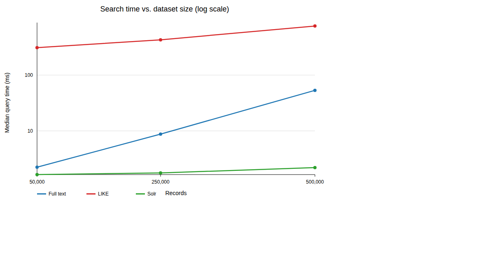
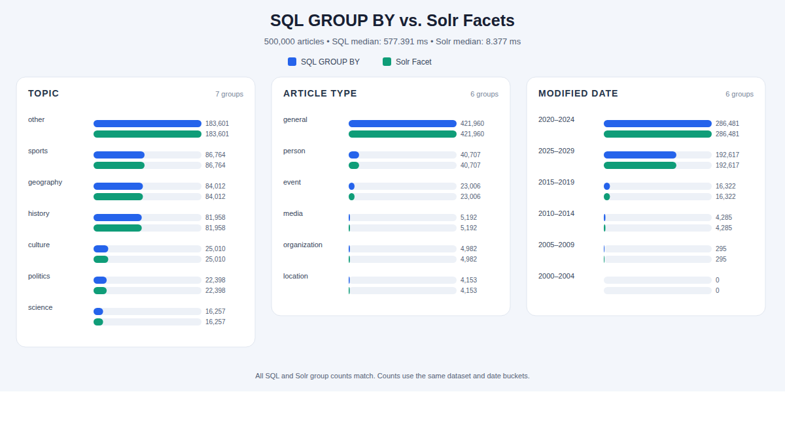

Wyszukiwanie pełnotekstowe, facety i pomiary skalowania
Autor: Michal ____________________ Data: ____________________
Celem projektu jest porównanie PostgreSQL z Apache Solr podczas wyszukiwania w dużym zbiorze artykułów. Wykonano import danych, indeksowanie pełnotekstowe, przykładowe zapytania, facety oraz testy skalowania dla 50 000, 250 000 i 500 000 rekordów.
Systemy uruchomiono w Dockerze. Wykorzystano PostgreSQL 17, Apache Solr 10 i Python 3.12.3.
Zbiór pochodzi z Hugging Face: wikimedia/structured-wikipedia, konfiguracja enwiki_namespace_0 (angielska Wikipedia). Plik data-set/wikipedia.csv ma 500 000 rekordów i około 843 MiB.
| Kontrola | Wynik |
|---|---|
| Rekordy / unikalne ID | 500 000 / 500 000 |
| Puste wartości | 0 w kontrolowanych kolumnach |
| Długość tekstu | średnio 1 686 znaków; minimum 300 |
| Kategorie | topic — 7 wartości; article_type — 6 wartości |
| Data | 500 000 poprawnych wartości date_modified |
Tekst w loaderze danych jest ograniczony do maksymalnie 5000 znaków. Kategorie są tworzone heurystycznie w data-set/download.py, a nie pochodzą bezpośrednio z etykiet eksperckich. Przed dalszą redystrybucją danych należy sprawdzić warunki licencji zbioru i źródła.
Tabela wikipedia_articles zawiera id BIGINT PRIMARY KEY, tytuł, tekst, kategorie, datę oraz search_vector TSVECTOR. Wektor wyszukiwania budowany jest z tytułu i tekstu za pomocą angielskiej konfiguracji PostgreSQL. Indeks GIN przyspiesza operator @@.
Zapytania obejmują wyszukiwanie słowa run, porównanie z LIKE '%run%', frazę United States oraz warunek logiczny history AND (war OR peace) AND NOT fiction.
| Zapytanie SQL | Dopasowane artykuły | Przykładowy czas |
|---|---|---|
Full text: run | 28 800 | 75,036 ms |
LIKE: %run% | 48 804 | 782,404 ms |
Fraza: United States | 38 148 | 222,591 ms |
| Warunek AND/OR/NOT | 4 240 | 13,238 ms |
To pojedyncze pomiary z pierwszego testu, a nie mediany pięciu powtórzeń.
W core wikipedia zaindeksowano te same 500 000 dokumentów. Pola tekstowe title i text są indeksowane i przechowywane. Kategorie i data dodatkowo mają docValues, co ułatwia faceting i sortowanie. Wszystkie pola są pojedynczej wartości (multiValued=false). Automatyczne tworzenie pól schemaless wyłączono.
Zapytania korzystają z eDisMax i pól title^3 text, zwracają do 10 dokumentów posortowanych według score, a osobny przykład prezentuje highlighting oraz facety.
| Zapytanie Solr | Dopasowane dokumenty |
|---|---|
Słowo run | 14 492 |
Fraza United States | 38 188 |
| Warunek logiczny | 3 984 |
Autouzupełnianie przez Terms Component działa na indeksie tytułów; prefiks foot zwrócił m.in. football i footballer.
Każdy pomiar poprzedzono rozgrzewką, a czas zapytania mierzono pięć razy; raportowana jest mediana. Pomiar Solr wykorzystuje precyzyjny zegar klienta i obejmuje całe żądanie HTTP. Solr zwraca też pomocniczy, całkowity QTime, który dla szybkich zapytań wynosił 0 ms i nie nadawał się do wykresu.
| Rekordy | SQL LIKE (ms) | SQL full text (ms) | Solr (ms, klient) |
|---|---|---|---|
| 50 000 | 310,127 | 2,240 | 1,652 |
| 250 000 | 428,139 | 8,765 | 1,767 |
| 500 000 | 757,659 | 53,311 | 2,203 |

Interpretacja: LIKE jest najwolniejszy w tym teście. Czasy SQL full-text i Solr także rosną wraz ze zbiorem, lecz dla Solra widoczny przyrost jest mniejszy. Porównanie nie jest w pełni równoważne: zapytania SQL i Solr używają innych analizatorów tekstu i zwracają inną liczbę dopasowań. Ponadto SQL mierzy czas wewnątrz serwera, a Solr po stronie klienta wraz z HTTP. Wnioski należy więc traktować jako pomiar tego wdrożenia, a nie uniwersalny ranking produktów.
W obu systemach pogrupowano 500 000 dokumentów po topic, article_type oraz dacie modyfikacji w zakresach pięcioletnich (2000–2029). Wyniki liczności zgadzają się dla wszystkich 19 grup.
| Metoda | Mediana | Wyniki pomiarów |
|---|---|---|
| SQL GROUP BY (trzy grupowania razem) | 577,391 ms | 603,291; 558,830; 577,391; 551,552; 578,078 |
| Solr — dwa facety kategoryczne i jeden zakresowy | 8,377 ms | 8,488; 8,325; 8,688; 8,377; 8,094 |

Czas SQL jest mierzony wewnątrz PostgreSQL, a czas Solr obejmuje klienta HTTP. Zakresy operacji są zbliżone, lecz pomiary mają różny narzut. Szczegóły liczności znajdują się w facet_comparison.csv.
| Rozszerzenie | Status |
|---|---|
| Autouzupełnianie (poziom 4.0) | Wykonane i przetestowane |
Głębokie stronicowanie Solr cursorMark (poziom 5.0) | Wykonane i przetestowane: 500 000 dokumentów, 501 stron; wynik w cursor_mark_results.csv |
| Synchronizacja INSERT/UPDATE/DELETE SQL → Solr (poziom 5.0) | Wykonana i przetestowana end-to-end: INSERT, UPDATE i DELETE |
Ważne: pełne przejście cursorMark sprawdzono na 500 000 dokumentów. Test integracyjny potwierdził synchronizację INSERT/UPDATE/DELETE. Aby synchronizować kolejne zmiany automatycznie, uruchom python3 solr/sync_outbox.py --watch; dostarczenie do Solr jest asynchroniczne.
Instrukcje uruchomienia znajdują się w README.md. SQL znajduje się w database/, konfiguracja i narzędzia Solr w solr/, dane i walidator w data-set/. CSV, wykresy i to sprawozdanie są zapisane obok README.
Projekt nie został spakowany do ZIP zgodnie z życzeniem autora. Przed oddaniem należy sprawdzić licencję źródła, dołączyć wymagane pliki wynikowe oraz upewnić się, że nie ma w nich haseł ani danych uwierzytelniających.